Guía paso a paso para el equipo de A3: la plataforma interna, el portal de las veterinarias y el agente que atiende por WhatsApp y Telegram.
Plataforma internaOperación, clientes, motorizados, resultados, facturación y cargas.
Portal de veterinariasCada clínica pide recogidas, ve sus resultados y su estado de cuenta.
Agente por chatAtiende por WhatsApp y Telegram y deriva a una persona cuando hace falta.
VersiónOctubre de 2026
ParaTodo el equipo de A3
UsoCapacitación y consulta diaria
Antes de empezar
La plataforma en una página
La plataforma tiene tres partes que comparten la misma información: lo que una veterinaria pide por WhatsApp aparece en la plataforma interna, y lo que el laboratorio publica aparece en el portal de la veterinaria.
1. Plataforma internaLa usa el equipo de A3, cada persona con su propio usuario. a3-plataforma-5km4.onrender.com/login
2. Portal de veterinariasCada clínica entra con su nombre y su NIT. a3-plataforma-5km4.onrender.com/portal
3. Agente por chatResponde por WhatsApp y Telegram; las conversaciones que necesitan una persona pasan a Chatwoot.
Qué ve cada perfil
Cada persona entra con su usuario, y su perfil define qué secciones ve y qué puede modificar. Los perfiles salen del documento «Perfiles Plataforma» de A3.
Sección
Administrador
Recepción
Digitación
Auxiliar admin.
Procesamiento
Panel
Gestionar
Gestionar
Gestionar
Gestionar
Gestionar
Operación
Gestionar
Gestionar
Gestionar
—
Gestionar
Clientes
Gestionar
Gestionar
Consultar
Gestionar
—
Solicitudes
Gestionar
Gestionar
Gestionar
—
Consultar
Pedidos
Gestionar
Gestionar
Gestionar
Consultar
Consultar
Facturación
Gestionar
—
—
Gestionar
—
Motorizados y Agenda
Gestionar
Gestionar
—
—
—
Muestras
Gestionar
Gestionar
Gestionar
—
Gestionar
Resultados
Gestionar
Consultar
Gestionar
—
Gestionar
Precios, cargas masivas y usuarios
Gestionar
—
—
—
—
Gestionar: ver y modificar. Consultar: solo ver. —: la sección no aparece en el menú. Si alguien intenta entrar a una sección que no le corresponde, ve la pantalla «Sin permiso».
Contenido
1Ingreso y usuarios
2Panel y Operación
3Clientes
4Solicitudes y pedidos
5Motorizados y agenda
6Muestras, catálogo y precios
7Resultados
8Facturación y cartera
9Cargas masivas
10El agente por WhatsApp y Telegram
11El portal de las veterinarias
12Qué hacer si…
Sección 1
Ingreso y usuarios
Todos los perfilesUsuarios: solo Administrador
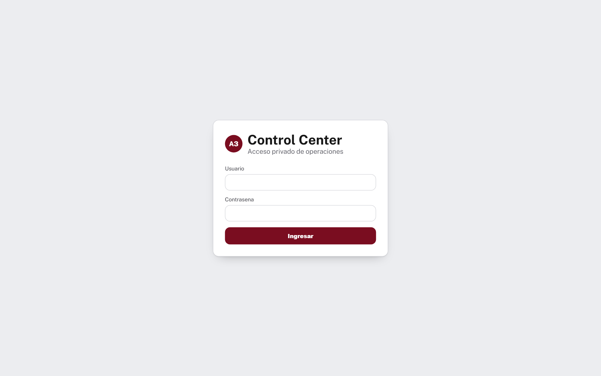
Pantalla de ingreso de la plataforma interna.
Entrar y salir
Abrir a3-plataforma-5km4.onrender.com/login.
Escribir el usuario y la contraseña personales y tocar Ingresar.
Abajo del menú se ve con qué usuario y perfil se entró.
Para salir, tocar Cerrar sesión, al final del menú.
Cada persona con su usuarioNo compartir usuarios ni contraseñas: cada cambio queda registrado con el nombre de quien lo hizo.
Crear y administrar usuarios (Administrador)
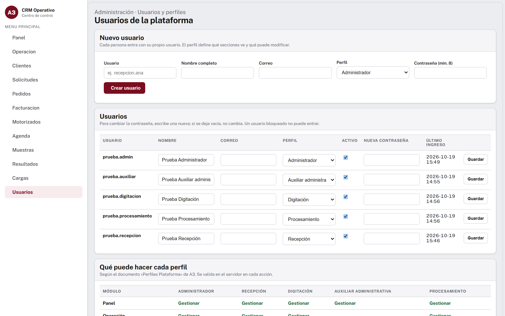
Usuarios: alta de una persona, lista de usuarios y lo que puede hacer cada perfil.
Entrar a Usuarios, al final del menú.
En Nuevo usuario, completar usuario (por ejemplo recepcion.ana), nombre, correo, perfil y una contraseña de al menos 8 caracteres. Tocar Crear usuario.
Para cambiar el perfil o la contraseña de alguien, editar su fila y tocar Guardar. Si la contraseña se deja vacía, no cambia.
Para que alguien ya no entre (por ejemplo, si deja la empresa), destildar Activo y guardar. Su historial se conserva.
Olvido de contraseñaUn Administrador le asigna una contraseña nueva desde esta misma pantalla.
En Clientes, escribir en el buscador el nombre, el NIT, el teléfono o el correo. Aparecen sugerencias mientras se escribe.
Los filtros de tipo, estado, motorizado y facturación electrónica acotan la lista.
Tocar el cliente para abrir su ficha.
Editar los datos desde la ficha
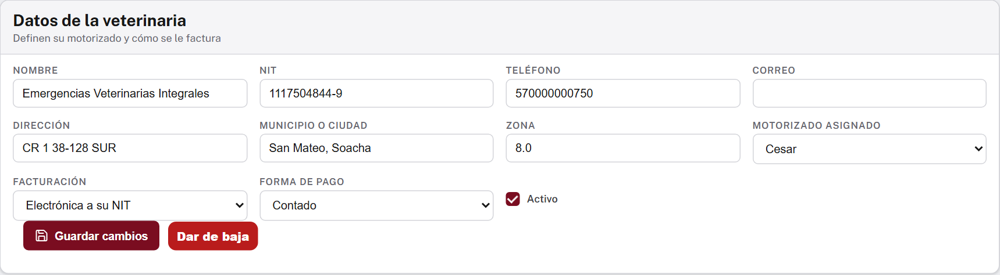
Datos de la veterinaria en su ficha, editables según el perfil.
Cambiar lo que haga falta: nombre, NIT, teléfono, correo, dirección, municipio o ciudad, zona, motorizado asignado, facturación o forma de pago.
Tocar Guardar cambios. Abajo, en Historial de cambios, queda quién cambió qué y cuándo.
Para reactivar un cliente inactivo, marcar Activo y guardar.
Dar de baja un clienteEl botón Dar de baja es seguro: si el cliente tiene solicitudes, pedidos, resultados o facturas, se desactiva y conserva toda su historia. Solo se elimina un cliente creado por error, sin ningún movimiento.
Clientes nuevos
Nuevo Cliente (arriba a la derecha) abre el registro con datos fiscales, de contacto y de ubicación.
Las veterinarias que piden el alta por el chat quedan pendientes de aprobación en Clientes: revisar sus datos y tocar Aprobar o Rechazar.
Sugerir motorizados propone el motorizado de los clientes que todavía no tienen, según su zona; se confirma antes de guardar.
Sección 4
Solicitudes y pedidos
Gestionar: Administrador, Recepción, DigitaciónConsultar: Procesamiento (y Auxiliar en Pedidos)
Solicitudes de recogida
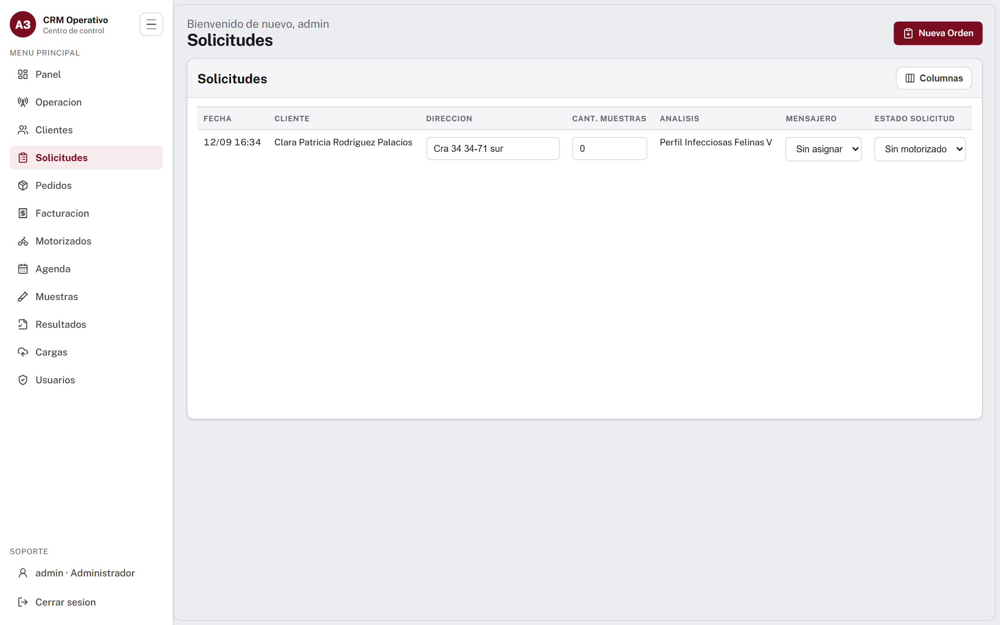
Solicitudes: dirección, cantidad de muestras, análisis, motorizado y estado editables en la tabla.
Cada solicitud muestra cliente, dirección, análisis, motorizado y estado. Se cambian directamente en la tabla y se guardan solos.
Asignar o cambiar el motorizado le envía el aviso a su chat (si tiene el chat de avisos configurado).
Cargar una orden que llega por teléfono o al laboratorio
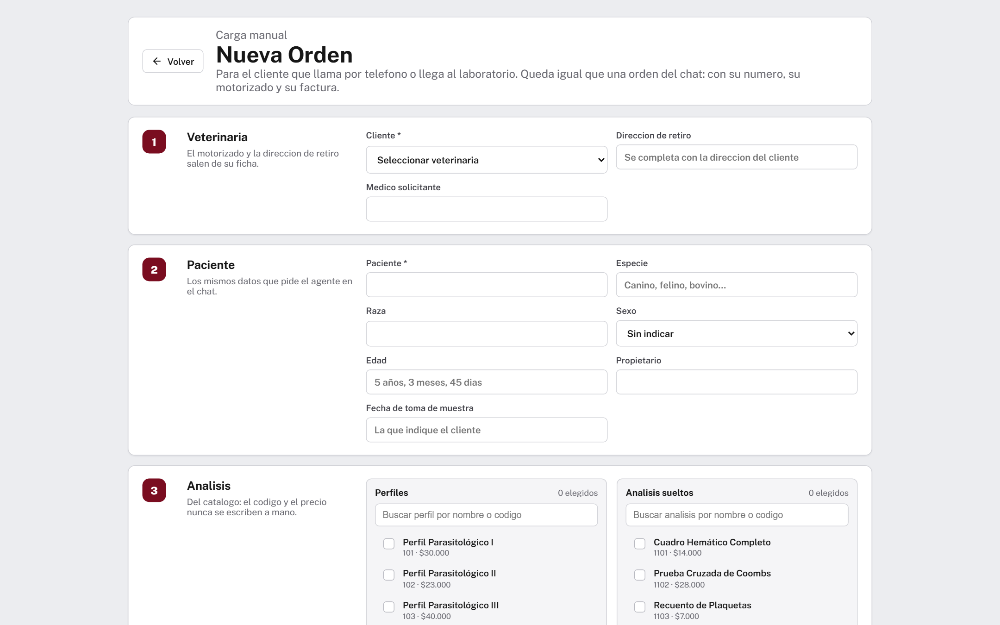
Nueva orden (carga manual).
En Solicitudes, tocar Nueva Orden.
Veterinaria: elegirla de la lista; la dirección de retiro y el motorizado salen de su ficha.
Paciente: nombre, especie, raza, edad, propietario y fecha de toma de muestra.
Análisis: buscar y marcar perfiles o análisis sueltos. El código y el precio salen del catálogo.
Guardar. Queda igual que una orden del chat: con número, motorizado y factura.
Pedidos
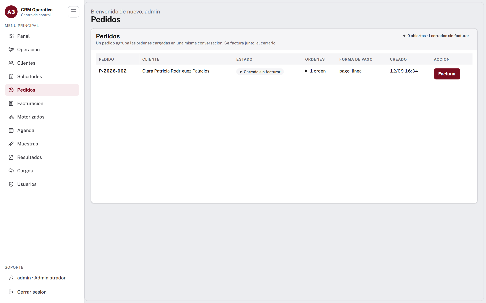
Pedidos: un pedido agrupa las órdenes de una misma conversación y se factura junto.
Estados: Abierto (todavía se pueden sumar órdenes), Cerrado sin facturar y Facturado.
Cerrar y facturar o Facturar genera la factura del pedido en Alegra como borrador, para que contabilidad la revise y la emita.
Sección 5
Motorizados y agenda
Administrador y Recepción
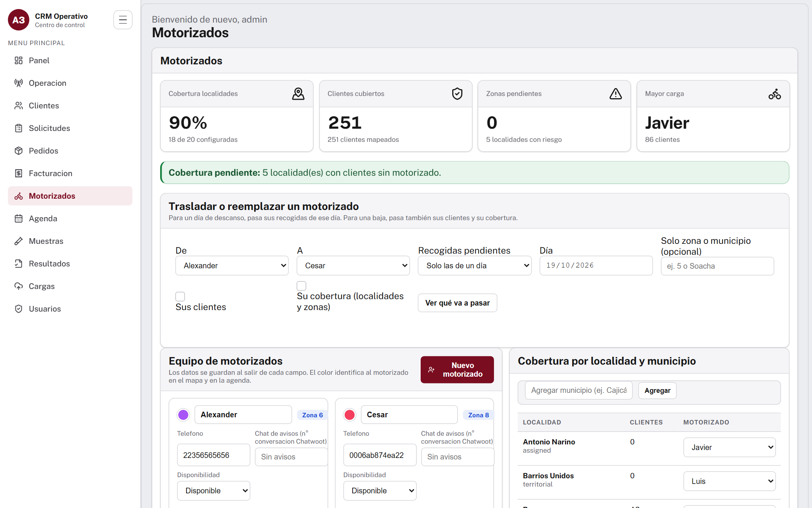
Motorizados: indicadores, traslado, equipo y cobertura.
Equipo de motorizados
Nuevo motorizado para darlo de alta.
En su tarjeta se editan nombre, teléfono, disponibilidad, color y chat de avisos; se guardan al salir de cada campo.
Activo lo habilita o deshabilita. Historial muestra sus cambios.
Eliminar solo funciona si no tiene clientes, cobertura ni recogidas. Si tiene, primero se traslada (abajo) o se desactiva.
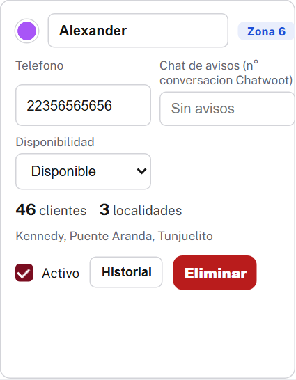
Tarjeta de un motorizado.
Cobertura por localidad y municipio
Cada localidad de Bogotá y cada municipio cercano (Soacha, Chía, Sibaté, Mosquera, Funza, Madrid, Cota…) tiene su motorizado. Se cambia en el desplegable de la tabla.
Para sumar un municipio, escribirlo en Agregar municipio y tocar Agregar; aparece en la tabla y en el mapa.
La recogida de un cliente se asigna sola en este orden: el motorizado fijo del cliente; si no tiene, el de su municipio o localidad; si no, el de su zona.
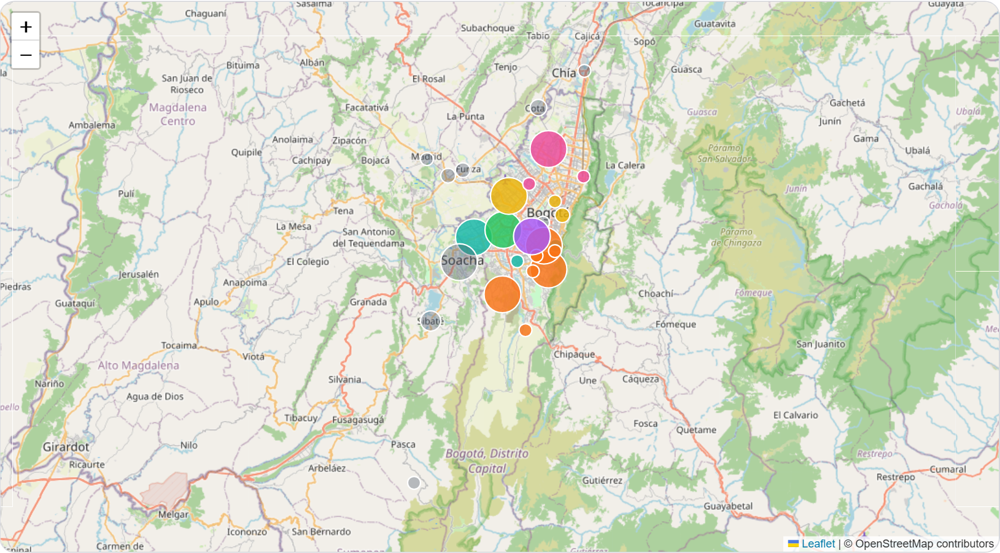
Mapa de cobertura: cada punto es una localidad o un municipio, con el color de su motorizado.
Sección 5 · continuación
Reemplazos y agenda
Trasladar o reemplazar un motorizado
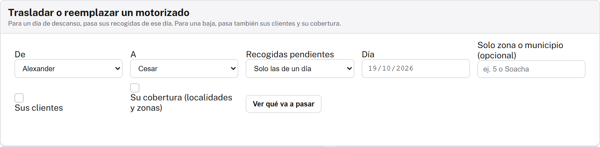
Panel «Trasladar o reemplazar un motorizado», arriba en Motorizados.
Elegir De (quien no va a estar) y A (quien lo reemplaza).
Día de descanso: en «Recogidas pendientes» dejar Solo las de un día y elegir la fecha. Opcional: limitar a una zona o un municipio (por ejemplo «Soacha»).
Baja o cambio permanente: marcar también Sus clientes y Su cobertura.
Tocar Ver qué va a pasar: muestra cuántas recogidas, clientes, localidades y zonas se mueven. No cambia nada todavía.
Tocar Confirmar traslado. El reemplazo recibe el aviso de cada recogida.
Agenda semanal
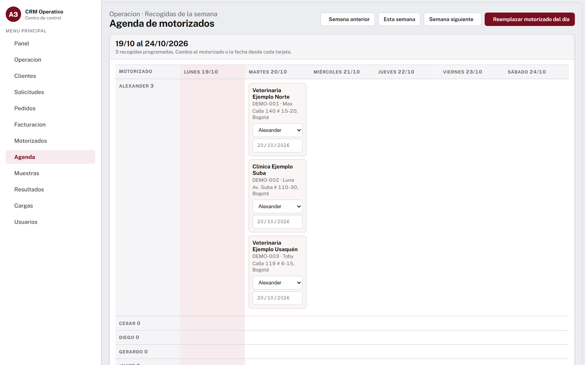
Agenda: una fila por motorizado y una columna por día.
Cada tarjeta es una recogida: se puede cambiar el motorizado o la fecha ahí mismo.
Las flechas pasan de semana. Reemplazar motorizado del día lleva directo al panel de traslado.
Sección 6
Muestras, catálogo y precios
Muestras: Administrador, Recepción, Digitación, ProcesamientoPrecios: solo Administrador
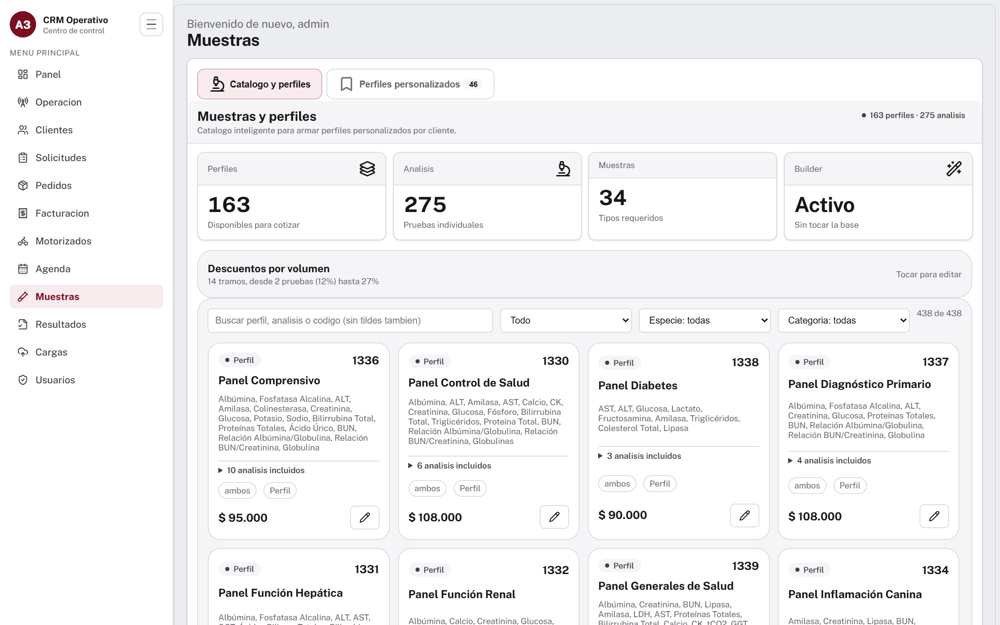
Muestras y perfiles: el catálogo completo, con buscador y filtros.
El catálogo tiene perfiles y análisis con su código, especie, muestra y precio. Se busca por nombre o código y se filtra por tipo, especie y categoría.
Perfiles personalizados: combinaciones de análisis guardadas para usarlas de nuevo.
El estado de cada muestra avanza desde la plataforma: por recoger, recogida, en laboratorio, analizada y enviada.
Cambiar un precio (Administrador)
Buscar el análisis o el perfil.
Tocar el lápiz de su tarjeta.
Escribir el precio nuevo (y la especie, si cambia) y tocar Guardar.
El bot y las facturas usan el precio nuevo desde ese momento. Cada cambio queda registrado con su valor anterior.
Muchos precios a la vezPara actualizar la lista de precios completa, usar Cargas masivas (Sección 9).
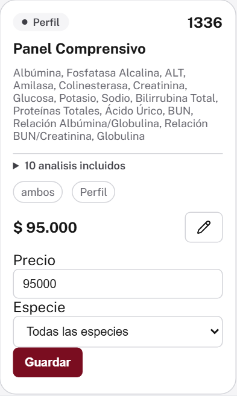
Edición del precio de un perfil.
Descuentos por volumen
En Descuentos por volumen (tocar para desplegar) se definen los tramos: desde cuántas pruebas aplica cada porcentaje. El bot los aplica al cotizar y la factura los lleva.
Hay dos pestañas: Espejo Anarvet, con los informes que vienen de Anarvet, e Informes de A3, para subir un PDF a mano.
Espejo Anarvet
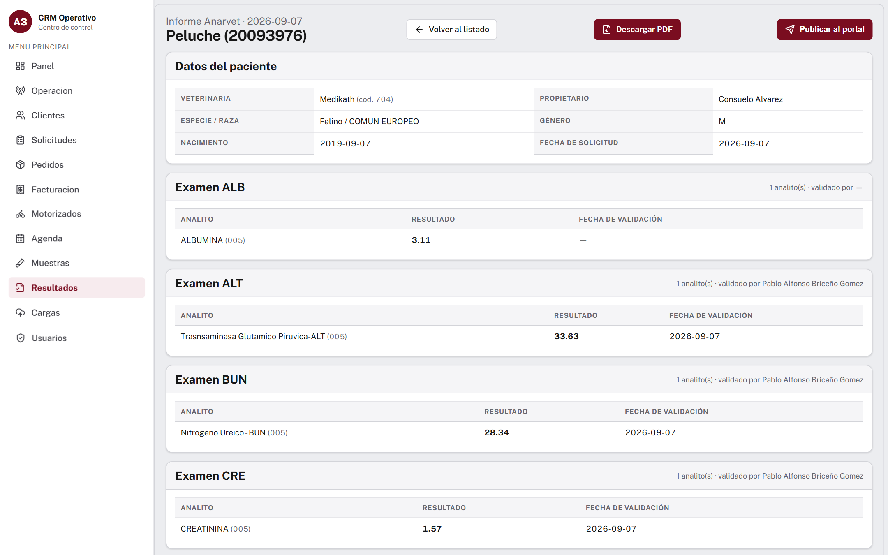
Un informe de Anarvet abierto en la plataforma.
En Resultados, abrir Espejo Anarvet. Sincronizar ahora trae los informes nuevos.
Buscar por paciente, propietario o veterinaria, y por fechas. Tocar Ver informe.
Descargar PDF genera el informe con el formato de A3. Publicar al portal lo comparte con la veterinaria, que lo ve en su portal y por el chat.
Emparejar veterinarias asocia los códigos de cliente de Anarvet con los clientes de A3, para que cada informe llegue a quien corresponde.
Subir un informe a mano
En Informes de A3 → Subir informe de resultados, escribir el número de orden (A3-XXXXX) o el NIT del cliente.
Adjuntar uno o varios PDF y marcar Compartir con el cliente al subir si ya lo puede ver.
En Historial de resultados emitidos se busca cualquier informe y se puede dejar de compartir.
Antes de publicarVerificar que el informe corresponda a la veterinaria, al paciente y a la orden correctos.
Sección 8
Facturación y cartera
Administrador y Auxiliar administrativa
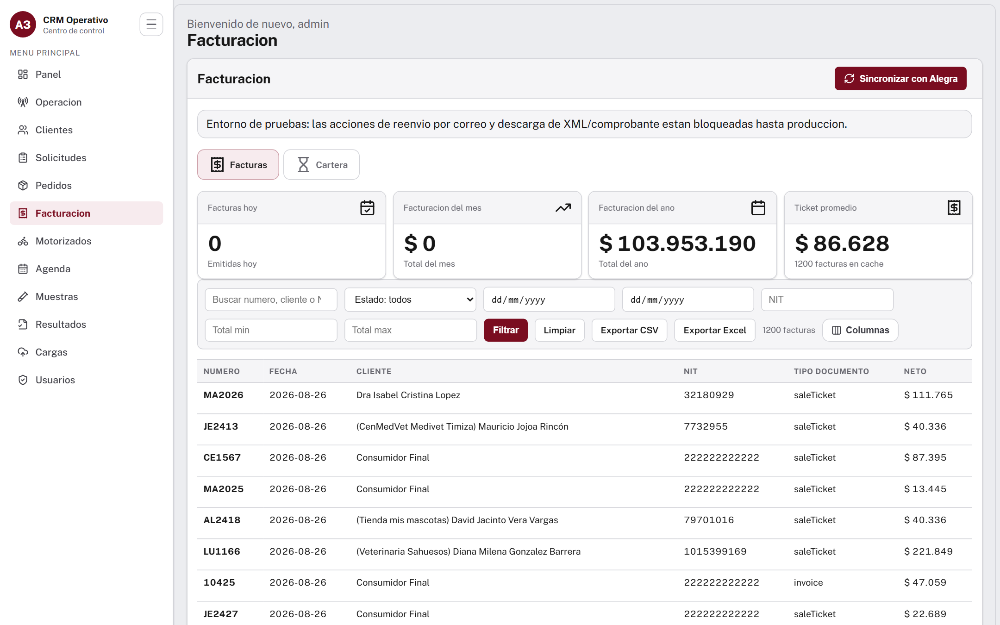
Facturación conectada con Alegra.
Facturas: las facturas de Alegra, con indicadores del día, el mes y el año. Se filtran por número, cliente, NIT, estado, fechas y montos.
Exportar CSV o Exportar Excel descargan la lista con los filtros aplicados.
Cartera: lo pendiente de cobro, agrupado por cliente.
Sincronizar con Alegra trae los últimos cambios de Alegra.
Cómo nace una factura hoy
La veterinaria cierra su pedido por el chat, o el equipo lo cierra en Pedidos.
La plataforma crea la factura en borrador en Alegra, a nombre del cliente (o de consumidor final si no factura electrónica a su NIT).
Contabilidad la revisa y la emite desde Alegra.
Próxima faseLa emisión automática de la factura, el pago en línea con Wompi y la autorización de datos por WhatsApp son parte de la fase 2.
Sección 9
Cargas masivas
Administrador
Sirven para cargar o actualizar muchos datos de una vez con un archivo de Excel o CSV: precios del catálogo, clientes, portafolio nuevo (análisis o perfiles que no existen) y motorizados.
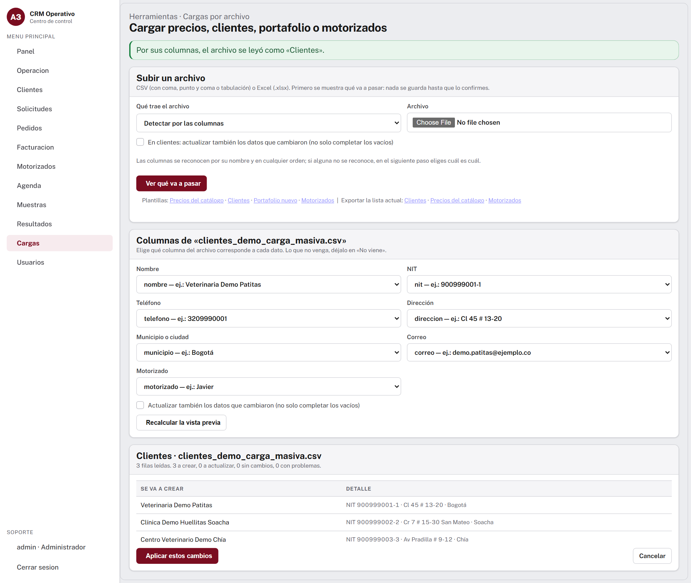
Carga de clientes: columnas reconocidas y vista previa antes de aplicar.
En Cargas, descargar la plantilla del tipo de carga (o exportar la lista actual, corregirla y volver a subirla).
Subir el archivo. Se acepta CSV con coma o punto y coma, o Excel (.xlsx). Con «Detectar por las columnas», la plataforma reconoce sola qué trae el archivo.
Revisar el paso de columnas: cada dato viene emparejado con su columna; si alguna no se reconoció, elegirla en la lista y tocar Recalcular la vista previa.
Revisar la vista previa: qué se va a crear, qué cambia (antes y después) y qué filas tienen problemas. Hasta acá no se guardó nada.
Tocar Aplicar estos cambios. Al final se muestra cuántos registros se crearon o actualizaron, y la carga queda en el historial.
Clientes: completar o actualizarPor defecto, la carga de clientes solo completa los datos vacíos. Marcando «Actualizar también los datos que cambiaron», reemplaza los que difieren. La columna Motorizado asigna el motorizado por su nombre.
Los precios cambian de verdadAl aplicar una carga de precios, el bot y las facturas los usan de inmediato. Revisar bien la columna «Después» de la vista previa.
Sección 10
El agente por WhatsApp y Telegram
Lo usan las veterinarias · lo supervisa el equipo en Chatwoot
El agente atiende a las clínicas y profesionales veterinarios registrados, con un tono cercano, y hace cuatro cosas:
Lo que pide la veterinaria
Qué hace el agente
Dónde se ve en la plataforma
Programar una recogida
Identifica la clínica por NIT o nombre, pide los datos del paciente y los análisis, ofrece agregar más órdenes al mismo pedido y pregunta la forma de pago.
Solicitudes, Pedidos, Agenda y Operación
Consultar un resultado
Busca el informe publicado del paciente y lo envía en PDF por el mismo chat.
Resultados
Pagos o facturación
Deriva siempre a Contabilidad.
Bandeja de Chatwoot
Cliente nuevo
Deriva siempre a Recepción: el agente no registra clientes.
Bandeja de Chatwoot y Clientes pendientes
Reglas que el agente cumple siempre
Identifica al cliente antes de registrar cualquier solicitud.
Corte de las 17:30: lo que llega después se programa para el siguiente día hábil.
El motorizado se asigna con la cobertura de la plataforma (Sección 5).
Los precios y descuentos salen siempre del catálogo: nunca los inventa.
Cuándo interviene una persona
Las conversaciones derivadas aparecen en Chatwoot, en la bandeja del equipo correspondiente (Contabilidad u Operaciones).
La persona responde desde Chatwoot; la veterinaria lo recibe en el mismo WhatsApp o Telegram.
Al terminar, resolver la conversación en Chatwoot.
Para probarloEscribir «Hola» al WhatsApp o al Telegram de A3 desde un teléfono de prueba y seguir la conversación como una veterinaria.
Sección 11
El portal de las veterinarias
Lo usan las veterinarias registradas
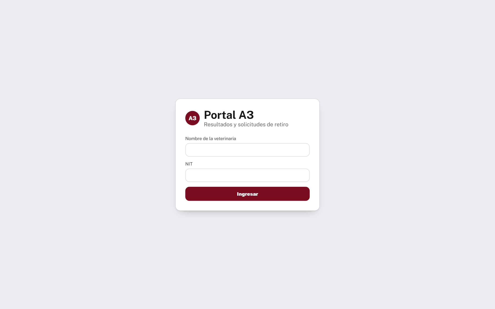
Ingreso al portal.
Cómo entra una veterinaria
Abre a3-plataforma-5km4.onrender.com/portal.
Escribe el nombre de la veterinaria y su NIT.
Si su NIT tiene varias sedes, elige la sede.
Sin NIT no hay portalUn cliente sin NIT en su ficha no puede entrar. Completarlo en Clientes.
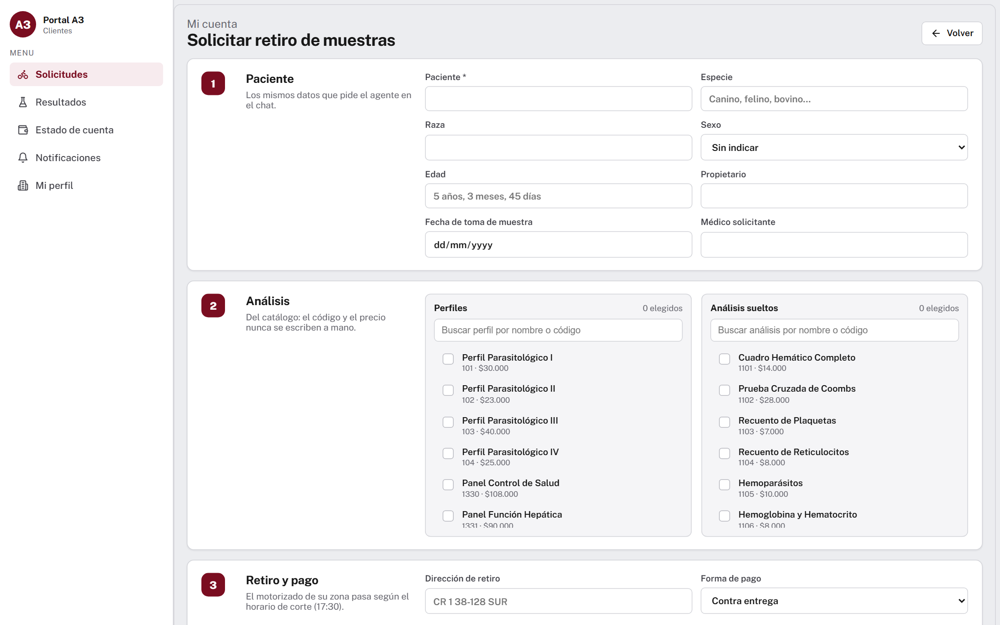
Solicitar retiro de muestras.
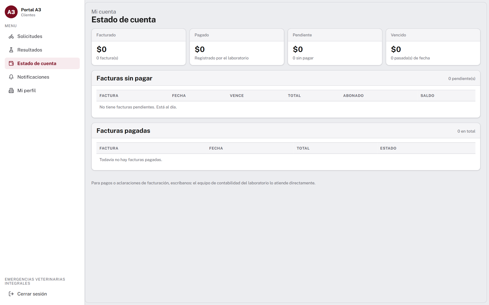
Estado de cuenta.
Solicitudes: su historial con el estado de cada retiro, y Solicitar retiro para pedir uno nuevo con paciente, análisis y forma de pago.
Resultados: los informes que el laboratorio le publicó; los abre o los descarga en PDF.
Estado de cuenta: facturas pagadas y pendientes. Notificaciones y Mi perfil completan el menú.
Sección 12
Qué hacer si…
Situación
Qué hacer
No encuentro un cliente
Buscarlo por NIT o teléfono en Clientes. Revisar el filtro «Estado»: puede estar inactivo.
Una veterinaria no puede entrar al portal
Verificar que tenga NIT en su ficha y que esté activa. Debe escribir el nombre y el NIT tal como figuran.
Una recogida no tiene motorizado
Aparece como alerta en Operación. Asignarlo en Solicitudes o en la Agenda. Para que no se repita, darle motorizado fijo al cliente o a su municipio o localidad.
Un motorizado no viene hoy
Motorizados → Trasladar o reemplazar → «Solo las de un día» con la fecha de hoy → Ver qué va a pasar → Confirmar.
Un motorizado deja la empresa
Trasladar sus clientes y su cobertura a otro, y después desactivarlo (o eliminarlo, si no tiene recogidas registradas).
Cambiaron muchos precios
Cargas → exportar la lista de precios → corregir en Excel → subirla → revisar la vista previa → aplicar.
Un resultado no le aparece a la veterinaria
En Resultados, verificar que esté publicado y que esté asociado a la veterinaria correcta (Emparejar veterinarias).
Alguien olvidó su contraseña
Un Administrador le asigna una nueva en Usuarios.
Alguien ve «Sin permiso»
Su perfil no incluye esa sección. Si la necesita, un Administrador le cambia el perfil.
Quiero saber quién cambió un dato
En la ficha del cliente o en la tarjeta del motorizado, ver el Historial de cambios.
Hay que dar de baja un cliente
Ficha → Dar de baja. Si tiene movimientos, queda inactivo con toda su historia.
SoporteAnte cualquier error o duda que no esté en esta guía, escribir al equipo de soporte de la plataforma con una captura de pantalla y una descripción de lo que se estaba haciendo.